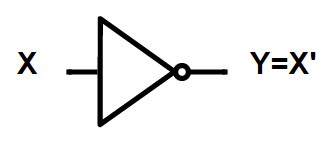

Introduction to NOT Gates
A NOT gate is a logic gate which implements logical negation. It has only one input and it provides the complemented input, so it is also called an inverter.
Functional Expression
If X is the input into the NOT gate, then the output of the NOT gate is Y, which is X' (X inverted).
- Z = Z'
- A = A'
Circuit Diagram
The standard symbol and circuit diagram for a NOT gate:

Truth Table
The truth table clearly shows that the output is always the exact opposite of the input.

Verification Procedure
The procedure to verify the basic operation of logic NOT gates using a breadboard is as follows:
- Take all required apparatus (Breadboard, IC 7404, LED, Resistor, Jumper wires, Power Supply).
- Give power supply to the breadboard.
- Connect the jumper wires to create a positive and negative path on the breadboard.
- Give pin number 7 a ground (connect to negative path) and pin 14 a high (connect to positive path) for the integrated circuit (IC 7404).
- Take pin 1 as input and pin 2 as the output of the IC.
- Connect one leg of the resistor to the output path and the other leg to any free point on the breadboard.
- Connect the positive leg of the LED to the path of the output leg of the resistor and the negative leg to the negative path of the breadboard.
Result
After completing the procedure, the LED will glow depending on the input. If the input is connected to the positive path (1), the LED will be off. If the input is connected to the negative path (0), the LED will glow (1).